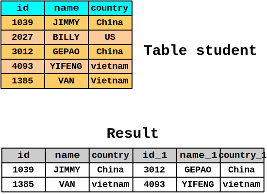

SQL Joins
Group Members :
Biqin Yan
Shang Jiang
Xiaolei Zhao
Wankui He
Feng Liang
Instructor:
Prof.Swetha Reddy Medipally
SQL Joins
- Cartesian Join
- Inner Join
- Equi Join
- Natural Join
- Outer Join
- Self Join
- Left Outer Join
- Right Outer Join
- Full Outer Join
Joins
| Inner Join | Only return rows that satisfy the join condition. | |
| Left Outer Join | Returns all rows from the left table but only the rows satisfy the join condition from the right table. | |
| Right Outer Join | Returns only the rows satisfy the join condition from the left table and all rows from the right table. | |
| Full Outer Join | Returns all rows from both tables with the matching ones paired up. |
Cartesian Join
Definition
Also called cross-join. Each row in the first table is paired with all the rows in the second table.
Syntax
Explicit Cross Join
SELECT s.stu_name, b.book_name FROM stu_name s CROSS JOIN book_name b;
Implicit Cross Join
SELECT s.stu_name, b.book_name FROM student s, book b;
Cartesian Join
Characteristics
- No join condition
- Accidentally(lack of experience)
- Normal uses are for checking the server's performance.
Cartesian Join Animation
SELECT s.stu_name, b.book_name FROM student s, book b;
Inner Join
Definition
An inner join (sometimes called a simple join) is a join of two or more tables that returns only those rows that satisfy the join condition.
Join Condition
Compares two row sources using an expression. Defines the relationship between the tables.
Inner Join
Syntax
Explicit Join Notation
SELECT * FROM student s INNER JOIN book b ON s.id = b.id;
-- The keyword "INNER" is optional
SELECT * FROM student s JOIN book b ON s.id = b.id;
Implicit Join Notation (WHERE clause)
SELECT * FROM student s, book b WHERE s.id = b.id;
Inner Join
Characteristics
- Join Condition is mandatory
- Selects something in common

Inner Join Animation
SELECT * FROM student s INNER JOIN book b ON s.id = b.id;
Equi Join
Definition
An equi join is a join whose join condition contains an equality operator.
Example of Equi Join
SELECT * FROM student s JOIN course c ON s.stu_id = b.stu_id;
Example of Non-Equi Join
SELECT * FROM student s JOIN course c
ON s.stu_id IN (2, 3) AND c.stu_id > s.stu_id;
Natural Join
Definition
The result is the set of all combinations of records from both tables that are equal on their common column names.
Syntax
SELECT * FROM student NATURAL JOIN book;
- System Join(the tables for you)
- No join condition
- No WHERE clause format
- Eliminates the same column
Natural Join Animation
SELECT * FROM student NATURAL JOIN book;
Left Outer Join
Definition
Returns all rows from the left table, with the matching rows in the right table. The result is NULL in the right side when there is no match.
Syntax
SELECT * FROM student s LEFT OUTER JOIN course c ON s.stu_id = c.stu_id;
SELECT * FROM student s, course c WHERE s.stu_id = c.stu_id(+);
Left Outer Join
Characteristics
- Join Condition is mandatory
- Right table is insufficient. Selects everything from the left table

Left Outer Join Animation
SELECT * FROM student s LEFT OUTER JOIN course c ON s.stu_id = c.stu_id;
Right Outer Join
Definition
Returns all rows from the right table, with the matching rows in the left table. The result is NULL in the left side when there is no match.
Syntax
SELECT * FROM student s RIGHT OUTER JOIN course c
ON s.stu_id = c.stu_id;
SELECT * FROM student s, course c WHERE s.stu_id(+) = c.stu_id;
Right Outer Join
Characteristics
- Join Condition is mandatory
- Left table is insufficient.Selects everything from the right table

Right Outer Join Animation
SELECT * FROM student s RIGHT OUTER JOIN course c
ON s.stu_id = c.stu_id;
Full Outer Join
Definition
Returns all rows from the left table and from the right table.
Syntax
SELECT * FROM student s FULL OUTER JOIN course c ON s.stu_id = c.stu_id;
(+)Outer Join Operator not applicable
Full Outer Join
Characteristics
- Join Condition is mandatory
- Selects everything from the right table

Full Outer Join Animation
SELECT * FROM student s FULL OUTER JOIN course c ON s.stu_id = c.stu_id;
Relationship between Inner Join and Outer Join
full outer join |
= | left outer join |
+ | right outer join |
- | inner join |
Self Join
Definition
A self-join is joining a table to itself. This table appears twice in the FROM clause and is followed by table aliases that qualify column names in the join condition.
Syntax
SELECT * FROM student s1 INNER JOIN student s2
ON s1.country = s2.country AND s1.id < s2.id;
Self Join
SELECT * FROM student s1 INNER JOIN student s2
ON s1.country = s2.country AND s1.id < s2.id;
Exmaple
Summary

THE END
Thank you!